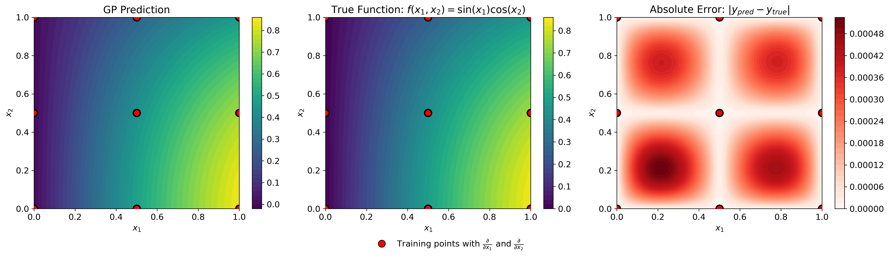
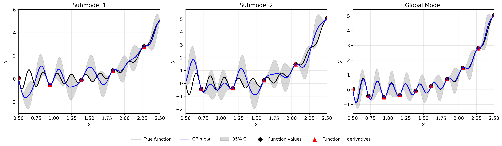
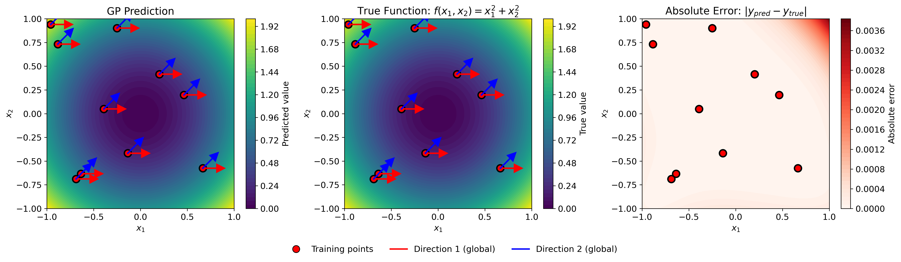
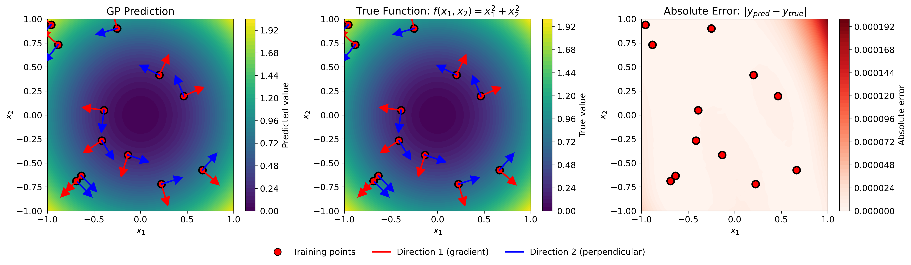
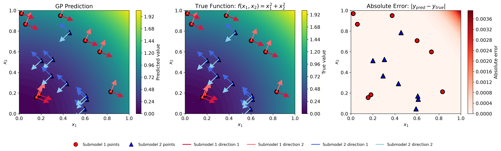

JetGP#
A Gaussian Process library with support for arbitrary-order derivative-enhanced training data.
Installation#
Anaconda#
Ensure that the Anaconda distribution is installed on your system. Click here for installation steps.
Cloning the repository#
$ git clone git@github.com:Samm-Py/jetgp.git
Conda environment#
Set up the dependencies of this repository using the environment.yml file.
Go to the root of the cloned repository. Create and activate the conda environment with the supplied
environment.ymlfile at root:
$ cd <path-to-JetGP>
$ conda env create -f environment.yml
$ conda activate jetgp
In the event where dependencies are added, the jetgp environment can be updated:
$ conda env update --file environment.yml --prune
Add JetGP to Python Path#
To make the jetgp library importable from anywhere, it must be added to your Python path.
There are two recommended ways to do this:
Option 1: Temporary addition using ``PYTHONPATH``
# From ``.\jetgp-main``
$ export PYTHONPATH=$PYTHONPATH:$(pwd)
# Optional: verify that JetGP is accessible
$ python -c "import jetgp; print('JetGP successfully added to PYTHONPATH')"
To make this change permanent, add the export line to your shell configuration file (e.g., ~/.bashrc or ~/.zshrc).
Option 2: Persistent addition using Conda (recommended for Anaconda users)
If using Anaconda, you can register the repository path with your environment using conda develop
(from the conda-build package):
$ conda install conda-build
$ cd <path-to-JetGP> (e.g., ``.\jetgp-main``).
$ conda develop .
This method automatically makes jetgp importable whenever the jetgp environment is active.
Local documentation build#
The documentation of the library can be built locally.
Ensure that the conda environment is activated:
$ conda activate jetgp
Change directory to the
docsdirectory and make abuilddirectory:
$ cd docs
$ mkdir build
Build and open the HTML documentation (e.g., using Firefox browser):
$ sphinx-build -M html source build
$ cd build/html
$ firefox index.html
Quick Start Examples#
DEGP: Derivative-Enhanced Gaussian Process#
This example demonstrates DEGP on the 2D function \(f(x_1, x_2) = \sin(x_1)\cos(x_2)\) using a 3×3 training grid with first and second-order coordinate derivatives.
import numpy as np
from jetgp.full_degp.degp import degp
import matplotlib.pyplot as plt
from matplotlib.lines import Line2D
# Ensure proper matplotlib backend
plt.rcParams.update({'font.size': 12})
# Generate 3x3 training grid
X1 = np.array([0.0, 0.5, 1.0])
X2 = np.array([0.0, 0.5, 1.0])
X1_grid, X2_grid = np.meshgrid(X1, X2)
X_train = np.column_stack([X1_grid.flatten(), X2_grid.flatten()])
# Compute function values and derivatives for f(x,y) = sin(x)cos(y)
y_func = np.sin(X_train[:,0]) * np.cos(X_train[:,1])
y_deriv_x = np.cos(X_train[:,0]) * np.cos(X_train[:,1])
y_deriv_y = -np.sin(X_train[:,0]) * np.sin(X_train[:,1])
y_deriv_xx = -np.sin(X_train[:,0]) * np.cos(X_train[:,1])
y_deriv_yy = -np.sin(X_train[:,0]) * np.cos(X_train[:,1])
# Organize training data
y_train = [y_func.reshape(-1,1), y_deriv_x.reshape(-1,1),
y_deriv_y.reshape(-1,1), y_deriv_xx.reshape(-1,1),
y_deriv_yy.reshape(-1,1)]
# Specify derivative structure
der_indices = [[[[1,1]], [[2,1]]], # First-order
[[[1,2]], [[2,2]]]] # Second-order
print("Initializing DEGP model...")
# Initialize and optimize
model = degp(X_train, y_train, n_order=2, n_bases=2,
der_indices=der_indices, normalize=True,
kernel="SE", kernel_type="anisotropic")
print("Optimizing hyperparameters...")
params = model.optimize_hyperparameters(optimizer='jade',
pop_size=100,
n_generations=15)
print("Optimization complete!")
# Predict on test grid
x_test = np.linspace(0, 1, 50)
X1_test, X2_test = np.meshgrid(x_test, x_test)
X_test = np.column_stack([X1_test.flatten(), X2_test.flatten()])
y_pred = model.predict(X_test, params, return_deriv=False)
# Compute true function values
y_true = np.sin(X_test[:,0]) * np.cos(X_test[:,1])
# Compute absolute error
abs_error = np.abs(y_true - y_pred.flatten())
print(f"Mean absolute error: {np.mean(abs_error):.6f}")
print(f"Max absolute error: {np.max(abs_error):.6f}")
{kind=link}

GP prediction (left), true function (center), and absolute error (right) for \(f(x_1, x_2) = \sin(x_1)\cos(x_2)\) using first and second-order coordinate-wise partial derivatives at nine regularly-spaced training points.#
—
WDEGP: Weighted Derivative-Enhanced Gaussian Process#
This example demonstrates WDEGP on the 1D function \(f(x) = \frac{\sin(10\pi x)}{2x} + (x-1)^4\) using two submodels with alternating training points. Each submodel has access to function values and first and second-order derivatives.
Example code:
import numpy as np
from jetgp.wdegp.wdegp import wdegp
import matplotlib.pyplot as plt
plt.rcParams.update({'font.size': 12})
# Define test function: f(x) = sin(10*pi*x)/(2*x) + (x-1)^4
def f_fun(x):
return np.sin(10*np.pi*x)/(2*x) + (x-1)**4
def f1_fun(x): # First derivative
return (10*np.pi*np.cos(10*np.pi*x))/(2*x) - \
np.sin(10*np.pi*x)/(2*x**2) + 4*(x-1)**3
def f2_fun(x): # Second derivative
return -(100*np.pi**2*np.sin(10*np.pi*x))/(2*x) - \
(20*np.pi*np.cos(10*np.pi*x))/(2*x**2) + \
np.sin(10*np.pi*x)/(x**3) + 12*(x-1)**2
# Generate training points
X_all = np.linspace(0.5, 2.5, 10).reshape(-1, 1)
# Partition into two submodels (alternating points)
submodel1_indices = [0, 2, 4, 6, 8]
submodel2_indices = [1, 3, 5, 7, 9]
# Reorder for contiguous indexing
X_train = np.vstack([X_all[submodel1_indices],
X_all[submodel2_indices]])
y_vals = f_fun(X_train.flatten()).reshape(-1, 1)
print("Training data prepared with 2 submodels (5 points each)")
# Compute derivatives for each submodel
d1_sm1 = np.array([[f1_fun(X_train[i,0])] for i in range(5)])
d2_sm1 = np.array([[f2_fun(X_train[i,0])] for i in range(5)])
d1_sm2 = np.array([[f1_fun(X_train[i,0])] for i in range(5,10)])
d2_sm2 = np.array([[f2_fun(X_train[i,0])] for i in range(5,10)])
# Package submodel data
submodel_data = [
[y_vals, d1_sm1, d2_sm1], # Submodel 1
[y_vals, d1_sm2, d2_sm2] # Submodel 2
]
submodel_indices = [[0,1,2,3,4], [5,6,7,8,9]]
derivative_specs = [[[[[1,1]]], [[[1,2]]]], [[[[1,1]]], [[[1,2]]]]]
print("Initializing WDEGP model...")
# Initialize and optimize
model = wdegp(X_train, submodel_data, n_order=2, n_bases=1,
index=submodel_indices,
der_indices=derivative_specs,
normalize=True, kernel="SE",
kernel_type="anisotropic")
print("Optimizing hyperparameters...")
params = model.optimize_hyperparameters(optimizer='jade',
pop_size=100,
n_generations=15)
print("Optimization complete!")
# Predict
X_test = np.linspace(0.5, 2.5, 250).reshape(-1, 1)
y_pred, y_cov, submodel_preds, submodel_covs = model.predict(
X_test, params, calc_cov=True, return_submodels=True
)
# Predict individual submodels
y_pred_sm1 = submodel_preds[0].flatten()
y_cov_sm1 = submodel_covs[0].flatten()
y_pred_sm2 = submodel_preds[1].flatten()
y_cov_sm2 = submodel_covs[1].flatten()
# Compute true function
y_true = f_fun(X_test.flatten())
abs_error = np.abs(y_true.flatten() - y_pred.flatten())
print(f"Mean absolute error: {np.mean(abs_error):.6f}")
print(f"Max absolute error: {np.max(abs_error):.6f}")
print(f"Predictions complete for {len(X_test)} test points")
{kind=link}

Comparison of submodel and global predictions for a 1D test function. Left: Submodel 1 trained with derivatives on alternating points (red triangles) and function values only on remaining points (black circles). Center: Submodel 2 trained with the complementary partition of derivative information. Right: Global model combining information from both submodels, where all training points have associated derivative observations. The shaded regions represent 95% confidence intervals.#
DDEGP: Directional Derivative-Enhanced Gaussian Process#
This example demonstrates DDEGP on the 2D function \(f(x_1, x_2) = x_1^2 + x_2^2\) using two global directional derivative directions applied at all training points. Unlike DEGP which uses coordinate-aligned derivatives, DDEGP allows arbitrary directional derivatives specified by ray vectors.
Example code:
import numpy as np
from jetgp.full_ddegp.ddegp import ddegp
import matplotlib.pyplot as plt
# Generate 2D training data: f(x,y) = x^2 + y^2
np.random.seed(42)
X_train = np.random.rand(10, 2) * 2 - 1 # [-1, 1]^2
y_vals = np.sum(X_train**2, axis=1)
print(f"Generated {len(X_train)} training points")
# Define two global directional derivative directions
rays = np.array([
[1.0, 0.5], # x-components
[0.0, 0.5] # y-components
])
# Normalize direction vectors to unit length
for i in range(rays.shape[1]):
rays[:, i] = rays[:, i] / np.linalg.norm(rays[:, i])
# Compute directional derivatives: grad(f) · ray
dy_dray1 = np.sum(2*X_train * rays[:,0].reshape(1,-1), axis=1)
dy_dray2 = np.sum(2*X_train * rays[:,1].reshape(1,-1), axis=1)
Y_train = [y_vals.reshape(-1,1),
dy_dray1.reshape(-1,1),
dy_dray2.reshape(-1,1)]
# Specify directional derivative structure
der_indices = [[[[1,1]], [[2,1]]]] # Two directions
print("Training data prepared with 2 directional derivatives per point")
# Initialize and optimize
model = ddegp(X_train, Y_train, n_order=1,
der_indices=der_indices, rays=rays,
normalize=True, kernel="SE",
kernel_type="anisotropic")
print("Optimizing hyperparameters...")
params = model.optimize_hyperparameters(optimizer='lbfgs', n_restarts=5)
print("Optimization complete!")
# Predict on grid
x_test = np.linspace(-1, 1, 50)
X1, X2 = np.meshgrid(x_test, x_test)
X_test = np.column_stack([X1.flatten(), X2.flatten()])
y_pred = model.predict(X_test, params, calc_cov=False)
# Compute true function and error
y_true = np.sum(X_test**2, axis=1)
abs_error = np.abs(y_true - y_pred.flatten())
print(f"Mean absolute error: {np.mean(abs_error):.6f}")
print(f"Max absolute error: {np.max(abs_error):.6f}")
{kind=link}

GP prediction (left), true function (center), and absolute error (right) for \(f(x_1, x_2) = x_1^2 + x_2^2\) using two global directional derivatives (shown as red and blue arrows) at ten randomly-placed training points. The directional rays are the same at all training locations, enabling efficient computation while capturing non-axis-aligned function behavior.#
GDDEGP: Generalized Directional Derivative-Enhanced Gaussian Process
This example demonstrates GDDEGP on the 2D function \(f(x_1, x_2) = x_1^2 + x_2^2\) using point-specific directional derivatives. Unlike DDEGP which uses the same global directions everywhere, GDDEGP allows different directional derivatives at each training point. Here, we use gradient-aligned and perpendicular directions that adapt to each location.
Example code:
import numpy as np
from jetgp.full_gddegp.gddegp import gddegp
# Generate 2D training data: f(x,y) = x^2 + y^2
np.random.seed(42)
X_train = np.random.rand(12, 2) * 2 - 1 # [-1, 1]^2
y_vals = np.sum(X_train**2, axis=1)
print(f"Generated {len(X_train)} training points")
# Create gradient and perpendicular directions for each point
n_points = len(X_train)
rays_array = [np.zeros((2, n_points)), np.zeros((2, n_points))]
for i in range(n_points):
# Gradient direction: [2x, 2y]
gradient = 2 * X_train[i]
grad_norm = np.linalg.norm(gradient)
# Direction 1: normalized gradient
rays_array[0][:, i] = gradient / grad_norm
# Direction 2: perpendicular (rotate 90 degrees)
rays_array[1][0, i] = -rays_array[0][1, i]
rays_array[1][1, i] = rays_array[0][0, i]
print("Created point-specific gradient and perpendicular directions")
# Compute directional derivatives
dy_dray1 = np.array([np.dot(2*X_train[i], rays_array[0][:,i])
for i in range(n_points)])
dy_dray2 = np.array([np.dot(2*X_train[i], rays_array[1][:,i])
for i in range(n_points)])
y_train = [y_vals.reshape(-1,1), dy_dray1.reshape(-1,1),
dy_dray2.reshape(-1,1)]
print("Directional derivatives computed")
# Initialize and optimize
model = gddegp(X_train, y_train, n_order=1,
rays_array=rays_array,
der_indices=[[[[1,1]], [[2,1]]]],
normalize=True, kernel="SE",
kernel_type="anisotropic")
print("Optimizing hyperparameters...")
params = model.optimize_hyperparameters(optimizer='lbfgs', n_restarts=5)
print("Optimization complete!")
# Predict on grid
x_test = np.linspace(-1, 1, 50)
X1, X2 = np.meshgrid(x_test, x_test)
X_test = np.column_stack([X1.flatten(), X2.flatten()])
# Dummy rays for prediction (not used for function values)
dummy_rays = [np.ones((2, len(X_test))), np.ones((2, len(X_test)))]
y_pred = model.predict(X_test, dummy_rays, params, return_deriv=False)
# Compute true function and error
y_true = np.sum(X_test**2, axis=1)
abs_error = np.abs(y_true - y_pred.flatten())
print(f"Mean absolute error: {np.mean(abs_error):.6f}")
print(f"Max absolute error: {np.max(abs_error):.6f}")
{kind=link}

GP prediction (left), true function (center), and absolute error (right) for \(f(x_1, x_2) = x_1^2 + x_2^2\) using point-specific directional derivatives. At each training point (red circles), two orthogonal directional derivatives are used: one aligned with the local gradient (red arrows pointing radially outward) and one perpendicular to it (blue arrows tangential to level curves). Unlike DDEGP where all arrows would be parallel, GDDEGP adapts the derivative directions to local function behavior.#
WDDEGP: Weighted Directional Derivative-Enhanced Gaussian Process#
This example demonstrates WDDEGP on the 2D function \(f(x_1, x_2) = x_1^2 + x_2^2\) using two submodels with different directional derivative configurations. Each submodel has its own set of global directional rays, combining the computational efficiency of partitioning with the flexibility of directional derivatives.
Example code:
import numpy as np
from jetgp.wddegp.wddegp import wddegp
# Generate training data (16 points)
np.random.seed(42)
X_train = np.random.rand(16, 2)
y_vals = X_train[:,0]**2 + X_train[:,1]**2
# Partition into 2 submodels (8 points each)
submodel_indices = [[0,1,2,3,4,5,6,7], [8,9,10,11,12,13,14,15]]
print(f"Generated {len(X_train)} training points in 2 submodels")
# Define different directional derivatives for each submodel
# Submodel 1: Two orthogonal directions at -22.5° and 67.5°
# Submodel 2: Two orthogonal directions at 135° and 225°
rays_data = [
np.array([[np.cos(-np.pi/8), np.cos(-np.pi/8 + np.pi/2)],
[np.sin(-np.pi/8), np.sin(-np.pi/8 + np.pi/2)]]), # Submodel 1
np.array([[np.cos(3*np.pi/4), np.cos(3*np.pi/4 + np.pi/2)],
[np.sin(3*np.pi/4), np.sin(3*np.pi/4 + np.pi/2)]]) # Submodel 2
]
print("Defined different directional rays for each submodel")
# Compute directional derivatives for each submodel
# For f(x,y) = x^2 + y^2: grad f = [2x, 2y]
grad_f = np.column_stack([2 * X_train[:,0], 2 * X_train[:,1]])
# Submodel 1 - two directions
v1_1 = rays_data[0][:, 0]
v1_2 = rays_data[0][:, 1]
dy_dray_sub1_dir1 = grad_f @ v1_1
dy_dray_sub1_dir2 = grad_f @ v1_2
# Submodel 2 - two directions
v2_1 = rays_data[1][:, 0]
v2_2 = rays_data[1][:, 1]
dy_dray_sub2_dir1 = grad_f @ v2_1
dy_dray_sub2_dir2 = grad_f @ v2_2
y_train_data = [
[y_vals.reshape(-1,1),
dy_dray_sub1_dir1[0:8].reshape(-1,1),
dy_dray_sub1_dir2[0:8].reshape(-1,1)],
[y_vals.reshape(-1,1),
dy_dray_sub2_dir1[8:16].reshape(-1,1),
dy_dray_sub2_dir2[8:16].reshape(-1,1)]
]
der_indices = [
[[[[1, 1]], [[2, 1]]]], # Submodel 1: two directional derivatives
[[[[1, 1]], [[2, 1]]]] # Submodel 2: two directional derivatives
]
print("Directional derivatives computed for both submodels")
# Initialize and train
model = wddegp(
X_train, y_train_data, n_order=1, n_bases=2,
index=submodel_indices,
der_indices=der_indices, rays=rays_data,
normalize=True, kernel="SE", kernel_type="anisotropic"
)
print("Optimizing hyperparameters...")
params = model.optimize_hyperparameters(optimizer='pso', pop_size=200,
n_generations=15, debug=False)
print("Optimization complete!")
# Make predictions on a grid
x1 = np.linspace(0, 1, 50)
x2 = np.linspace(0, 1, 50)
X1, X2 = np.meshgrid(x1, x2)
X_test = np.column_stack([X1.ravel(), X2.ravel()])
y_pred = model.predict(X_test, params)
# Compute true function and error
y_true = X_test[:,0]**2 + X_test[:,1]**2
abs_error = np.abs(y_true - y_pred.flatten())
print(f"Mean absolute error: {np.mean(abs_error):.6f}")
print(f"Max absolute error: {np.max(abs_error):.6f}")
{kind=link}

GP prediction (left), true function (center), and absolute error (right) for \(f(x_1, x_2) = x_1^2 + x_2^2\) using two weighted submodels. Submodel 1 (first 8 points, cyan markers) uses directional derivatives at -22.5° and 67.5° (cyan arrows). Submodel 2 (remaining 8 points, magenta markers) uses directional derivatives at 135° and 225° (magenta arrows). Each submodel has its own directional configuration, and the final prediction combines both weighted submodels.#
Quick Access#
Theory of derivative-enhanced Gaussian Processes implemented in JetGP
Modules and minimal examples for using JetGP optimal step size selection algorithms.
Numerical examples showcasing JetGP capabilities